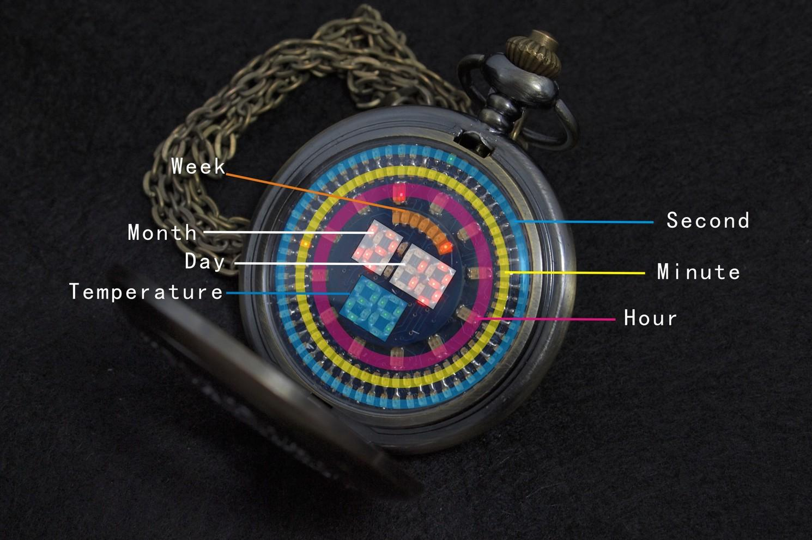
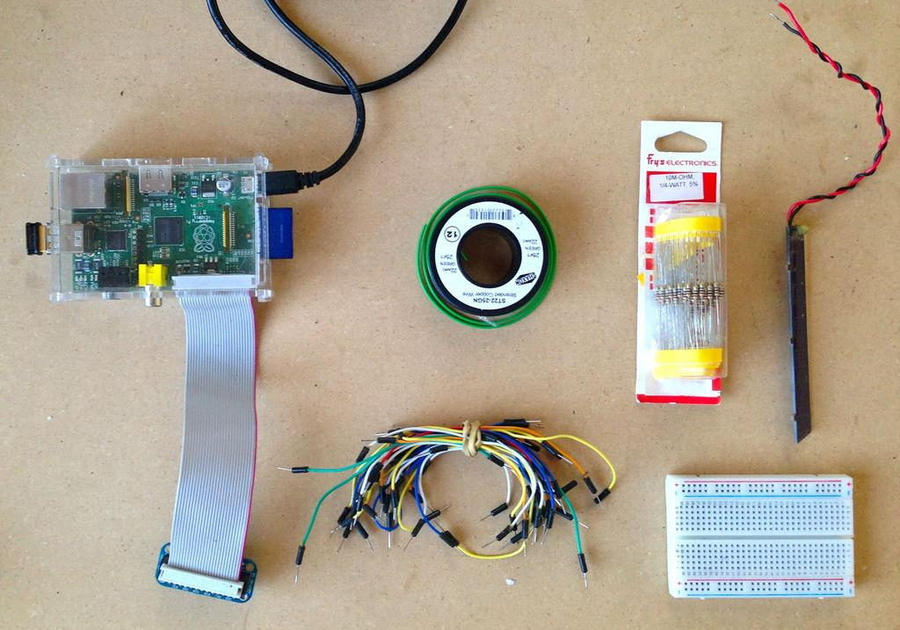
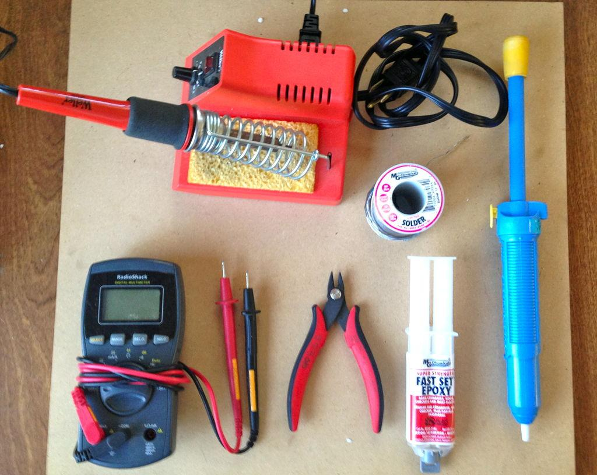
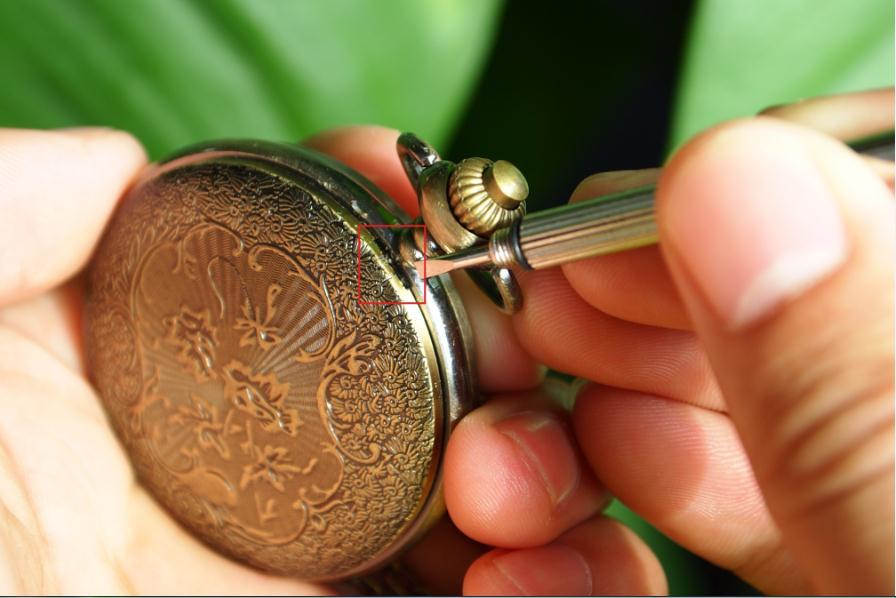

You are a geek to the core but deep in your heart you love the retro style?
Then you will love this watch!
178 SMD LEDs controlled by a MSP430 microcontroller and powered by a CR2032 lithium battery in an unique ancient looking pocket watch case made of cooper. But not only the combination of the the spacey-looking PCB and the retro-style pocket watch case is unique. Thanks to a built in MMA7660 3-axis accelerometer also the user interface for changing the time is absolute unique. Knocking on the clock you can switch between the timescale and by tilting it clockwise or counterclockwise you can increase or decrease the time. Last but not least you can also measure the environmental temperature with this clock made by the famous Chinese developer and designer Baisha. Just buy this clock, start using it and everyone of your friends will envy you!
| Current Consumption(while LEDs On) | 70mA |
| Current Consumption(while LEDs Off) | 2uA |
| Battery Life Span(LEDs on 10min/day) | 21Days |
| Displayed Temperature | ℃ |
| Temperature Measuring | 0℃-85 ±1℃ |
| Waterproof | NO |
| Weight | 53g |
Pushing the button on the top of the clock will open the upper shell and switch at the same time the LEDs on to show you the current time.
Closing the upper shell will not switch the LEDs off automatically. So you can see the time while the clock is open and while it is closed through the semi-transparent design. Only pushing the button again will switch the LEDs off to save energy.

1. push the button on the top to switch the LEDs on
2. knock the glass of the clock twice and the minute will start blinking
3. from the neutral position - holding the clock vertically with the button showing upwards - turn the clock clockwise to increase the minutes and turn it counterclockwise to decrease the minutes
4. knock the clock again once to change the hours, then the weeks, days, month and the year in the same way like the minutes.Just like the picture.

5. after setting the right time push the button again to save the time and if not knock the clock again one time to come from the year again to minutes
1. open the backplane by using the provided notch shown in the picture


2. remove the battery by pulling it out
3. insert a new CR2032 battery in this way that the positive (+) pole is facing to you(limit tiem:15s)
4. close the backplane again by pressing it on the clock enclosure
5. set the right time
Mainboard PCB file in Altium Designer
Topboard PCB file in Altium Designer
The code of the MSP430F4152 use the IAR of MSP430